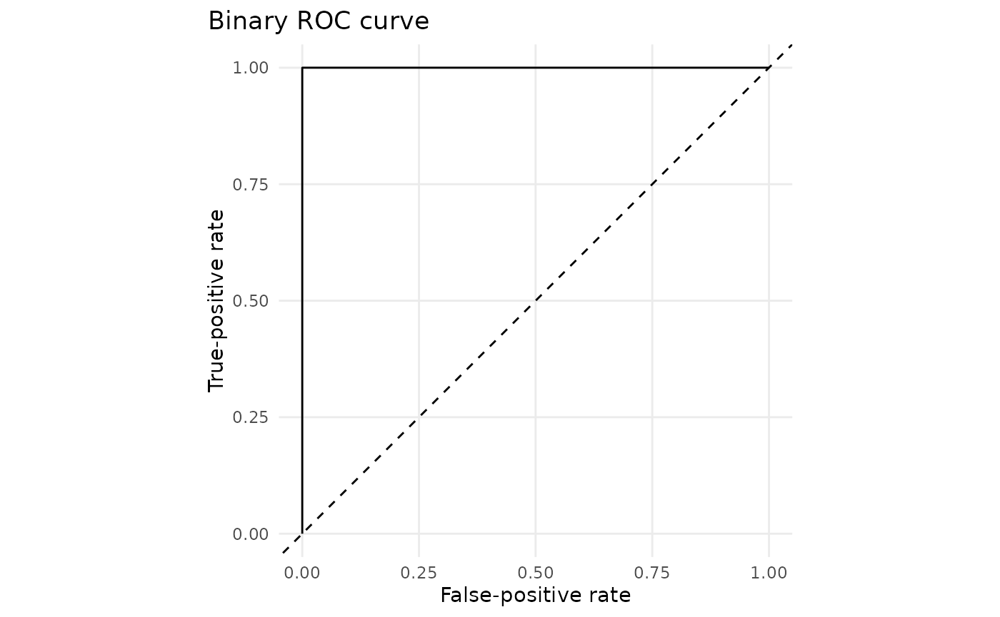
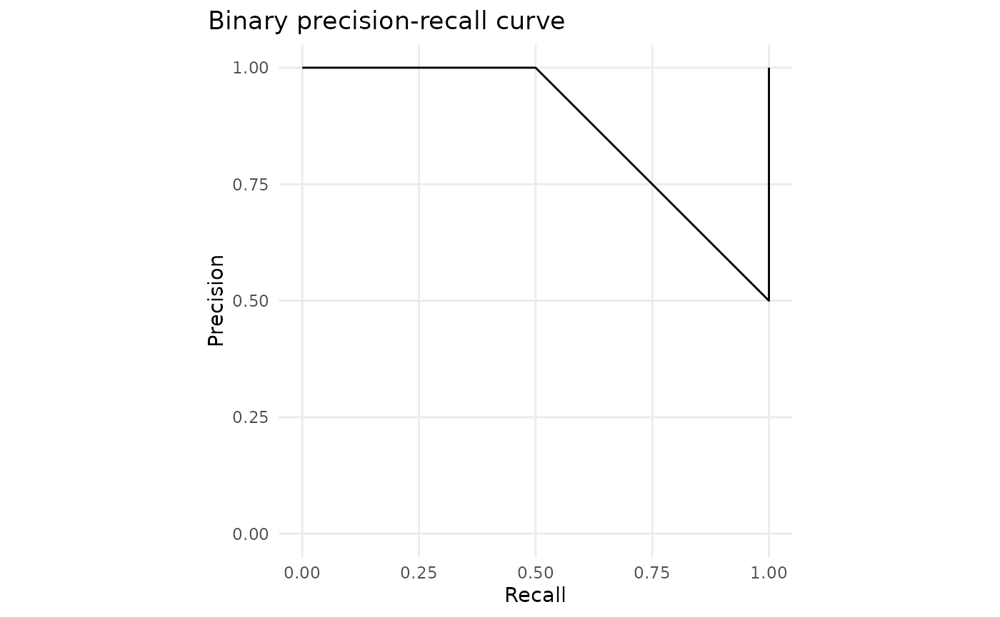

Advanced Predictive Diagnostics
Source:vignettes/advanced-predictive-diagnostics.Rmd
advanced-predictive-diagnostics.RmdThis article extends the prediction layer with diagnostics that remain descriptive rather than becoming automatic acceptance or rejection rules.
library(gp3bayes)
p <- c(0.05, 0.20, 0.75, 0.90)
y <- c(0, 0, 1, 1)
binary_confusion_table(p, y)
#> observed predicted count threshold
#> 1 0 0 2 0.5
#> 2 0 1 0 0.5
#> 3 1 0 0 0.5
#> 4 1 1 2 0.5
binary_roc_curve(p, y)
#> threshold false_positive_rate true_positive_rate
#> 1 Inf 0.0 0.0
#> 2 0.90 0.0 0.5
#> 3 0.75 0.0 1.0
#> 4 0.20 0.5 1.0
#> 5 0.05 1.0 1.0
#> 6 -Inf 1.0 1.0
binary_precision_recall_curve(p, y)
#> threshold recall precision
#> 1 Inf 0.0 1.0000000
#> 2 0.90 0.5 1.0000000
#> 3 0.05 1.0 0.5000000
#> 4 -Inf 1.0 0.5000000
#> 5 0.20 1.0 0.6666667
#> 6 0.75 1.0 1.0000000
binary_calibration_error(p, y, bins = 2)
#> n bins_requested bins_used expected_calibration_error
#> 1 4 2 2 0.15
#> maximum_calibration_error automatic_adequacy_verdict
#> 1 0.175 FALSE
plot_binary_roc(binary_roc_curve(p, y))

For a fitted model, posterior predictive discrepancy checks retain the entire replicated distribution:
pp <- predict_model(
fit,
type = "predictive",
include_group_effects = TRUE,
ndraws = 1000
)
check <- posterior_predictive_statistic(pp, statistic = "mean")
ppc_statistic_table(check)
plot_ppc_statistic(check)Duration models additionally support predictive Q-Q and tail checks:
duration_qq_table(pp)
plot_duration_qq(pp)
tail <- duration_tail_check(pp, threshold = 2000)
plot_duration_tail(tail)None of these diagnostics certifies adequacy automatically.